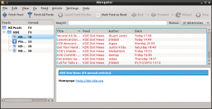

I worked a bit on some user-interface improvements for kdepim applications. So far I worked on KOrganizer and Akregator.
Here is a screenshot of KOrganizer when I started:
My first change was to remove all double-margins from the main window:
This gives more room for actual content, but the event indicators (the green up and down arrows indicating some events are outside the view) was wasting some vertical space. I replaced them with overlayed indicators:
You might notice I got a bit creative here: I didn't use an icon for the indicators. Instead I used unicode characters representing arrows, namely "UPWARDS DASHED ARROW" or U+21E1: ⇡ and "DOWNWARDS DASHED ARROW" or U+21E3: ⇣ (Thanks to KCharSelect for making it easy to search for arrow characters)
I felt using characters like this would result in less invasive indicators. As can be seen in the following screenshot, if the indicator overlaps an event it does not prevent you from reading the event text.
Finally, I changed the appearance and alignment of the time labels (the column on the left of the agenda) so that they are aligned with the agenda, making the two look a bit more like they work together.
I also did some message boxes clean up: I went through all of them and fixed those which used "yes/no" buttons instead of more descriptive verbs, as recommended by KDE HIG.
I picked up Akregator as an example of bad list view columns in my last article.
I improved the feed tree on the left: by default it now only shows the feed names followed by the unread count. If you add back the "Unread" column, the unread count disappear from the "Name" column.
I then reworked the article list in a few ways:
Here is how it looks now:
Hopefully this makes the application more pleasant to use.
{kind=link}
{kind=link}
{kind=link}
{kind=link}
{kind=link}
{kind=link}
{kind=link}